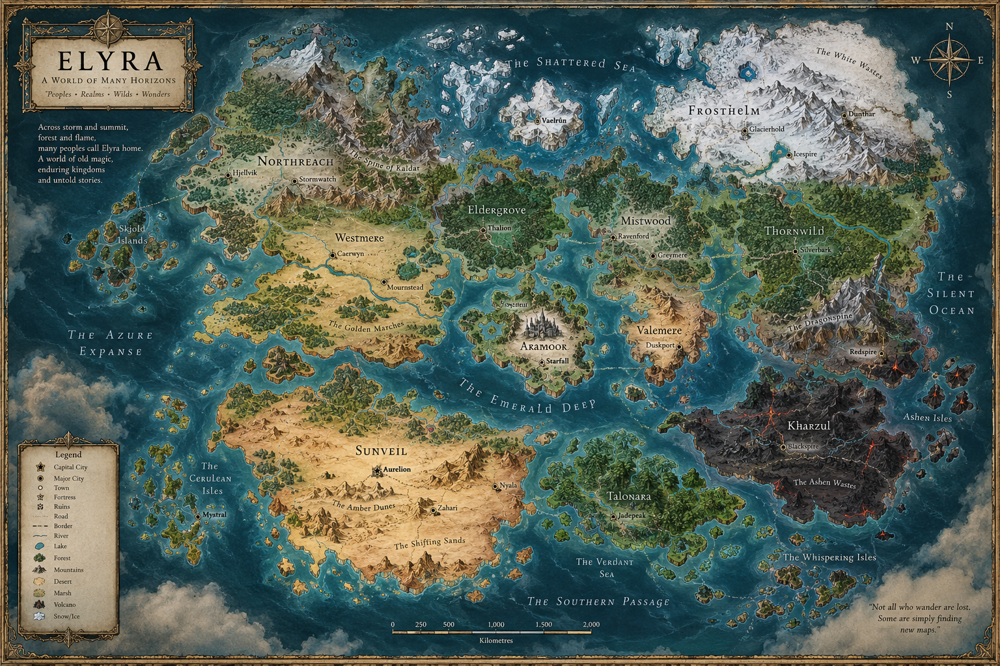
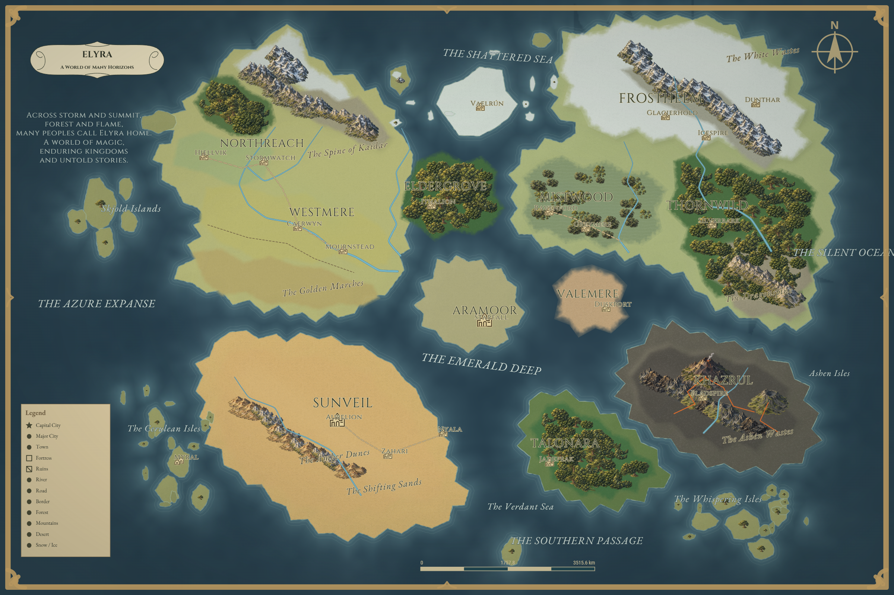

VERGELIJKINGSMONTAGE — geen Mapweaver-kaartexport. Zelfde noorden, crop en schaal. Referentie x=295, y=315, 170×160.


De brede baai is herkenbaar en de eilanden blijven vrij. Kleine inhammen blijven gegeneraliseerd.